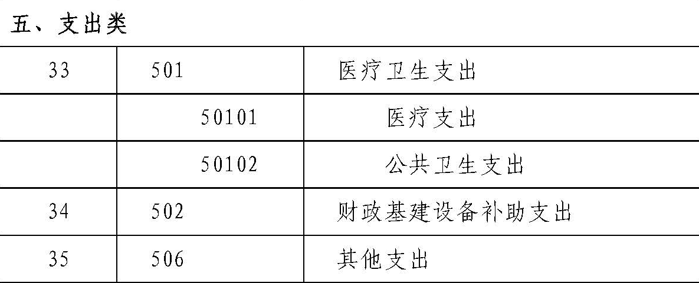
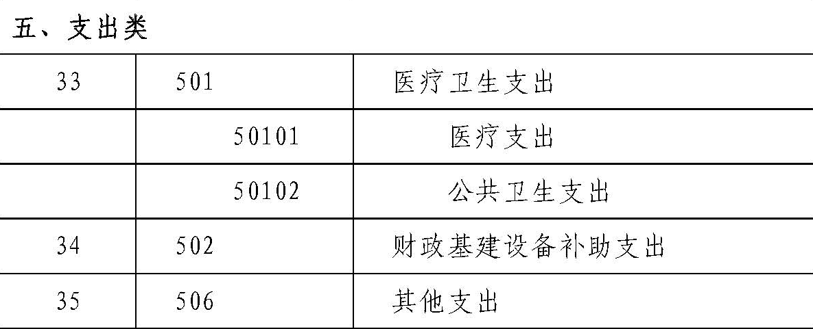

财政部
关于印发《基层医疗卫生机构会计制度》的通知
财会〔2010〕26号
【依据《关于印发〈政府会计制度——行政事业单位会计科目和报表〉的通知》（财会〔2017〕25号），执行《政府会计制度——行政事业单位会计科目和报表》（财会〔2017〕25号）的单位不再执行本制度；依据《关于公布废止和失效的财政规章和规范性文件目录（第十三批）的决定》（财政部令第103号）于2020.01.23废止】
各省、自治区、直辖市、计划单列市财政厅（局），新疆生产建设兵团财务局：
为了适应社会主义市场经济和医疗卫生事业发展的需要，规范基层医疗卫生机构的会计核算，提高会计信息质量，促进基层医疗卫生机构加强财务管理，根据《中华人民共和国会计法》及国家有关法律法规的规定，结合基层医疗卫生机构特点，我们制定了《基层医疗卫生机构会计制度》，现印发给你们，请遵照执行。执行中有何问题，请及时反馈我部。
附件：基层医疗卫生机构会计制度
财政部
2010年12月29日
附件：
基层医疗卫生机构会计制度
第一部分 总说明
一、为了规范基层医疗卫生机构的会计核算，保证会计信息的真实、完整，根据《中华人民共和国会计法》、事业单位会计准则及国家有关法律法规的规定，制定本制度。
二、本制度适用于中华人民共和国境内由政府举办的独立核算的城市社区卫生服务中心（站）、乡镇卫生院等基层医疗卫生机构。
企业事业单位、社会团体及其他社会组织举办的非营利性基层医疗卫生机构参照执行。
三、基层医疗卫生机构应根据会计业务的需要，设置会计机构，或者在有关机构中设置会计人员并指定会计主管人员；不具备设置条件的，应委托经批准设立从事会计代理记账业务的中介机构代理记账。
有条件的地区，可对基层医疗卫生机构实行财务集中核算，具体办法由地方根据实际情况确定。
四、基层医疗卫生机构会计采用收付实现制基础。
基层医疗卫生机构会计要素包括资产、负债、净资产、收入和支出。
五、基层医疗卫生机构应按照下列规定运用会计科目：
（一）基层医疗卫生机构应按照本制度的规定，设置和使用会计科目。在不影响会计处理和编报会计报表的前提下，可以根据实际情况自行设置本制度规定之外的明细科目，不需用的科目可以不设置。
（二）本制度统一规定会计科目的编号，以便于编制会计凭证、登记账簿、查阅账目，实行会计信息化管理。基层医疗卫生机构不得随意打乱重编。
（三）基层医疗卫生机构在编制会计凭证、登记会计账簿时，应填列会计科目的名称，或者同时填列会计科目的名称和编号，不得只填列科目编号，不填列科目名称。
六、基层医疗卫生机构财务报告是反映基层医疗卫生机构某一特定日期的财务状况和某一会计期间的收支等情况的书面文件。基层医疗卫生机构应按照下列规定编制和提供财务报告：
（一）基层医疗卫生机构财务报告由会计报表、会计报表附注和财务情况说明书组成。
基层医疗卫生机构会计报表包括资产负债表、收入支出总表、净资产变动表以及业务收支明细表、财政补助收支明细表等有关附表。
基层医疗卫生机构会计报表附注至少应包括：重要会计政策、会计估计的说明，会计报表重要项目及其增减变动情况的说明，有助于理解和分析会计报表的需要说明的其他事项。
基层医疗卫生机构财务情况说明书应主要说明基层医疗卫生机构的业务开展情况、预算执行情况、财务收支状况、资产变动情况、基本建设情况及相关报表、绩效考评情况及相关报表、对本期或下期财务状况发生重大影响的事项、专项资金的使用情况以及其他需要说明的事项。
（二）基层医疗卫生机构财务报告分为月度、季度和年度财务报告。
（三）基层医疗卫生机构会计报表应根据登记完整、核对无误的账簿记录和其他有关资料编制，要做到数字真实、计算准确、内容完整、报送及时。
（四）基层医疗卫生机构对外提供的财务报告应由单位负责人和主管会计工作的负责人、会计机构负责人（会计主管人员）签名并盖章。
七、基层医疗卫生机构填制会计凭证、登记会计账簿、内部会计监督与控制、会计档案管理等相关会计基础工作，应按照会计基础工作规范和会计档案管理办法等规定执行。
八、基层医疗卫生机构对基本建设投资的会计核算除按照本制度执行外，还应按照国家有关规定单独建账、单独核算。
九、本制度由财政部负责解释。
十、本制度自2011年7月1日起施行。
第二部分 会计科目名称和编号
 

|
第三部分 会计科目使用说明
一、资产类
101 库存现金
一、本科目核算基层医疗卫生机构的库存现金。
二、基层医疗卫生机构应严格按照国家有关现金管理的规定收支现金，并按照本制度的规定核算现金的各项收支业务。
三、库存现金的主要账务处理如下：
（一）从银行提取现金时，按照实际提取金额，借记本科目，贷记“银行存款”科目；将现金存入银行时，按照实际存入金额，借记“银行存款”科目，贷记本科目。
（二）从零余额账户中提取现金时，按照实际提取金额，借记本科目，贷记“零余额账户用款额度”科目。
（三）提供基本医疗和公共卫生服务等收到现金时，按照实际收到金额，借记本科目，贷记“待结算医疗款”、“医疗收入”等科目。
（四）垫付职工因出差等原因所需的现金，按照实际借出金额，借记“其他应收款”等科目，贷记本科目。结算时，按照实际收回金额，借记本科目，按照实际报销金额，借记“医疗支出”、“待摊支出”等科目，按照预借金额，贷记“其他应收款”科目。
四、基层医疗卫生机构应设置“现金日记账”，由出纳人员根据收付款凭证，按照业务发生顺序逐笔登记。每日终了，应计算当日的现金收入合计数、现金支出合计数和结余数，并将结余数与实际库存数核对，做到账款相符。
每日核对账款时发现现金溢余或短缺的，应及时查明原因并进行处理。如发现现金溢余，属于应付未付有关人员或单位的部分，借记本科目，贷记“其他应付款”科目；属于无法查明原因的部分，借记本科目，贷记“其他收入”科目。如发现现金短缺，属于应由过失人赔偿的部分，借记“其他应收款”科目，贷记本科目；属于无法查明原因的部分，借记“其他支出”科目，贷记本科目。
五、本科目期末借方余额，反映基层医疗卫生机构实际持有的库存现金。
102 银行存款
一、本科目核算基层医疗卫生机构存入银行等金融机构的各种存款。
基层医疗卫生机构的银行本票存款、银行汇票存款、信用卡存款等在“其他货币资金”科目核算，不在本科目核算。
二、基层医疗卫生机构应严格按照国家有关支付结算办法的规定办理银行存款收支业务，并按照本制度规定核算银行存款的各项收支业务。
三、银行存款的主要账务处理如下：
（一）将款项存入银行时，按照实际存入金额，借记本科目，贷记“库存现金”、“应收医疗款”、“医疗收入”等科目。
（二）提取和支出存款时，按照实际提取和支出金额，借记“库存现金”、“应付账款”、“医疗卫生支出”等科目，贷记本科目。
四、基层医疗卫生机构应按照开户银行、存款种类等设置“银行存款日记账”，由出纳人员根据收付款凭证，按照业务的发生顺序逐笔登记，每日终了结出余额。“银行存款日记账”应定期与“银行对账单”核对，至少每月核对一次。月度终了，账面余额与银行对账单余额之间如有差额，必须逐笔查明原因并进行处理，按照月度编制“银行存款余额调节表”，调节相符。
五、本科目期末借方余额，反映基层医疗卫生机构实际存放银行等金融机构的款项。
103 零余额账户用款额度
一、本科目核算实行国库集中支付的基层医疗卫生机构根据财政部门批复的用款计划收到的、尚未动用的零余额账户用款额度。
二、零余额账户用款额度的主要账务处理如下：
（一）在财政授权支付方式下，收到代理银行盖章的“授权支付到账通知书”时，按照其所列数额，借记本科目，贷记“财政补助收入”科目。
发生支出时，按照实际支出金额，借记“库存物资”、“医疗卫生支出”、“财政基建设备补助支出”等科目，贷记本科目。
（二）从零余额账户提取现金时，按照实际提取金额，借记“库存现金”科目，贷记本科目。
（三）年末，按照代理银行提供的对账单作注销额度时，借记“财政应返还额度——财政授权支付”科目，贷记本科目。下年初，按照代理银行提供的“额度恢复到账通知书”恢复额度时，借记本科目，贷记“财政应返还额度——财政授权支付”科目。
如本年度财政授权支付预算指标数大于零余额账户用款额度下达数，按照两者差额，借记“财政应返还额度——财政授权支付”科目，贷记“财政补助收入”科目。下年度收到财政部门批复的上年末未下达零余额账户用款额度时，按照批复额度，借记本科目，贷记“财政应返还额度——财政授权支付”科目。
三、本科目期末借方余额，反映基层医疗卫生机构尚未支用的零余额账户用款额度。本科目年末应无余额。
104 其他货币资金
一、本科目核算基层医疗卫生机构的银行本票存款、银行汇票存款、信用卡存款等各种其他货币资金。
二、本科目应设置“银行本票存款”、“银行汇票存款”和“信用卡存款”等一级明细科目，进行明细核算。
三、其他货币资金的主要账务处理如下：
（一）向银行办理银行本票存款、银行汇票存款、信用卡存款等业务时，按照实际存入金额，借记本科目，贷记“银行存款”等科目。
（二）使用银行本票存款、银行汇票存款、信用卡存款等其他货币资金支付库存物资等采购款项时，借记“库存物资”等科目，贷记本科目。
四、基层医疗卫生机构应加强对其他货币资金的管理，及时办理结算，对于逾期尚未办理结算的银行汇票、银行本票等，应按照规定及时转回。
五、本科目期末借方余额，反映基层医疗卫生机构实际持有的其他货币资金。
111 财政应返还额度
一、本科目核算实行国库集中支付的基层医疗卫生机构年终应收财政下年度返还的资金额度。
二、本科目应设置“财政直接支付”和“财政授权支付”一级明细科目，进行明细核算。
三、财政应返还额度的主要账务处理如下：
（一）财政直接支付年末结余资金的账务处理。
年末，根据本年度财政直接支付预算指标数与财政直接支付实际支出数的差额，借记本科目（财政直接支付），贷记“财政补助收入”科目。
下年度恢复财政直接支付额度后，发生实际支出时，借记“库存物资”、“医疗卫生支出”、“财政基建设备补助支出”等科目，贷记本科目（财政直接支付）。
（二）财政授权支付年末结余资金的账务处理。
年末，按照代理银行提供的对账单注销额度时，借记本科目（财政授权支付），贷记“零余额账户用款额度”科目。下年初，按照代理银行提供的额度恢复到账通知书恢复额度时，借记“零余额账户用款额度”科目，贷记本科目（财政授权支付）。
如本年度财政授权支付预算指标数大于零余额账户用款额度下达数，按照两者差额，借记本科目（财政授权支付），贷记“财政补助收入”科目。下年度收到财政部门批复的上年末未下达零余额账户用款额度时，按照批复额度，借记“零余额账户用款额度”科目，贷记本科目（财政授权支付）。
四、本科目期末借方余额，反映基层医疗卫生机构应收财政下年度返还的资金额度。
112 应收医疗款
一、本科目核算基层医疗卫生机构因提供基本医疗和公共卫生服务而应向门诊病人、住院病人收取的和与医疗保险机构结算的应收未收医疗款项。
二、本科目应设置“结算欠费”和“应收医疗保险金”一级明细科目。
“结算欠费”一级明细科目按照“门诊病人”和“住院病人”设置明细账，进行明细核算。
“应收医疗保险金”一级明细科目按照医疗保险机构设置明细账，进行明细核算。
三、应收医疗款的主要账务处理如下：
（一）与门诊病人结算医疗款时，应向门诊病人收取的部分，按照门诊病人实际支付或应付未付的医疗款金额，借记“库存现金”、本科目（结算欠费——门诊病人）等科目，应由医疗保险机构负担的部分，按照有关规定计算的应收医疗保险金额，借记本科目（应收医疗保险金），按照有关规定计算确定的门诊病人医疗款金额，贷记“医疗收入”科目（未实行“收支两条线”管理）或“待结算医疗款”科目（实行“收支两条线”管理）。
（二）与住院病人结算医疗款时，如住院病人应付医疗款金额大于其预交金额，按照预收住院病人医疗款金额，借记“预收医疗款”科目，按照实际补付或应付未付金额，借记“库存现金”、本科目（结算欠费——住院病人）等科目，按照有关规定计算的应由医疗保险机构负担的医疗保险金额，借记本科目（应收医疗保险金），按照有关规定计算确定的住院病人医疗款金额，贷记“医疗收入”科目（未实行“收支两条线”管理）或“待结算医疗款”科目（实行“收支两条线”管理）。
如住院病人应付医疗款金额小于其预交金额，按照预收住院病人医疗款金额，借记“预收医疗款”科目，按照有关规定计算的应由医疗保险机构负担的医疗保险金额，借记本科目（应收医疗保险金），按照退还给住院病人医疗款金额，贷记“库存现金”、“银行存款”等科目，按照有关规定计算确定的住院病人医疗款金额，贷记“医疗收入”科目（未实行“收支两条线”管理）或贷记“待结算医疗款”科目（实行“收支两条线”管理）。
（三）收到病人补交的结算欠费时，按照实际收到的金额，借记“库存现金”等科目，贷记本科目（结算欠费）。
（四）与医疗保险机构结算医疗款时，按照实际收到的医疗保险机构结算金额，借记“银行存款”等科目，贷记本科目（应收医疗保险金）。
如医疗保险机构预拨并需结算医疗保险金的，与医疗保险机构结算时，按照医疗保险机构预付金额，借记“预收医疗款”科目，按照医疗保险机构补付或退还医疗保险机构的金额，借记或贷记“银行存款”等科目，按照应收医疗保险机构的金额，贷记本科目（应收医疗保险金）。
（五）与医疗保险机构结算发生结算差额时，对于可由相关过失人赔偿的部分，按照实际赔偿金额，借记“库存现金”、“银行存款”等科目，贷记本科目（应收医疗保险金）；对于由相关过失人赔偿以外的部分，按照规定批准核销的金额，借记“其他支出”科目，贷记本科目（应收医疗保险金）。
四、基层医疗卫生机构应定期或者至少于每年年度终了，对应收医疗款进行全面检查。对于期限超过3年以上，确认无法收回的除医保结算差额以外的应收医疗款，应及时查明原因，并根据管理权限在报经批准后核销。核销时，借记“其他支出”科目，贷记本科目。基层医疗卫生机构应设置“坏账核销备查簿”，详细登记已核销应收医疗款坏账的债务人姓名、形成时间、金额、原因等相关信息。
如果已核销的应收医疗款在以后期间又收回的，应按照实际收回的金额，借记“银行存款”等科目，贷记“其他收入”等科目。
五、本科目期末借方余额，反映基层医疗卫生机构应收未收的医疗款项。
114 其他应收款
一、本科目核算基层医疗卫生机构除财政应返还额度、应收医疗款以外的其他各项应收、暂付款项，包括职工预借的差旅费、拨付的备用金、应向职工收取的各种垫付款项等。
二、本科目应按照其他应收款的项目分类以及不同的债务人设置明细账，进行明细核算。
三、其他应收款的主要账务处理如下：
（一）基层医疗卫生机构发生的其他各种应收、暂付款项等各项其他应收款，借记本科目，贷记“银行存款”、“库存现金”等科目；收回或转销各种款项时，借记“库存现金”、“银行存款”或相关支出科目，贷记本科目。
（二）实行定额备用金制度的基层医疗卫生机构，在领用备用金时，按照批准领用的金额，借记本科目（备用金），贷记“银行存款”等科目。定期向财会部门报销已使用的备用金并用现金补足备用金定额时，按照实际报销金额，借记有关支出科目，贷记 “银行存款”等科目。
四、基层医疗卫生机构应定期或者至少于每年年度终了，对其他应收款进行全面检查。对于账龄超过3年以上，确认无法收回的其他应收款应及时查明原因，并根据管理权限报经批准后核销。核销时，借记“其他支出”科目，贷记本科目。基层医疗卫生机构应设置“坏账核销备查簿”，详细登记已核销其他应收款坏账的形成期限、金额、原因等相关信息。
如果已核销的其他应收款在以后期间又收回的，应按照实际收回的金额，借记“银行存款”科目，贷记“其他收入”等科目。
五、本科目期末借方余额，反映基层医疗卫生机构尚未收回的其他应收款。
121 库存物资
一、本科目核算基层医疗卫生机构为了开展基本医疗和公共卫生服务活动及其他活动储存的药品、卫生材料、低值易耗品和其他材料的实际成本。
二、本科目应按照库存物资的类别，如“药品”、“卫生材料”、“低值易耗品”和“其他材料”等设置一级明细科目，“药品”一级明细科目下应设置“药库”、“药房”两个二级明细科目，并按照西药、中成药、中草药进行明细核算。
本科目明细账下按照品名、规格设置数量金额明细账，库房应设置实物收、发、存数量明细账。
三、库存物资的主要账务处理如下：
（一）库存物资在取得时，应以其成本入账，具体如下：
1.按照规定集中采购配送的库存物资，其成本按照通过集中采购确定的采购价格（包括配送费用，下同）确定，自行外购的库存物资成本按照实际采购价格及相关直接税费确定。外购或集中采购配送的物资验收入库时，按照确定的成本，借记本科目，贷记“银行存款”、“应付账款”、“零余额账户用款额度”等科目。
2.接受捐赠的库存物资，其成本比照同类或类似物资的市场价格或有关凭据注明的金额确定。接受捐赠的物资验收入库时，按照确定的成本，借记本科目，贷记“其他收入”科目。
（二）库存物资在发出时，应根据实际情况采用个别计价法、先进先出法或者加权平均法确定发出物资的实际成本。计价方法一经确定，不得随意变更。
1.开展基本医疗和公共卫生服务等业务活动领用库存物资时，按照其实际成本，借记“医疗卫生支出”、“待摊支出”等科目，贷记本科目。
低值易耗品应于内部领用时摊销，摊销方法可以采用一次摊销或五五摊销。
2.药房从药库领取药品，按照领取药品的成本，借记本科目（药品——药房），贷记本科目（药品——药库）。药房结转已出售药品的成本时，按照其实际成本，借记“医疗卫生支出”等科目，贷记本科目（药品——药房）。
3.因其他原因领用或发出库存物资，按照其实际成本，借记“待摊支出”等科目，贷记本科目。
四、基层医疗卫生机构的各种库存物资，应定期进行清查盘点，每年至少盘点一次。对于盘盈、盘亏以及变质、毁损的物资，应及时查明原因，根据管理权限报经批准后及时进行账务处理：
（一）盘盈的库存物资，比照同类或类似物资的市场价格确定的价值，借记本科目，贷记“其他收入”科目。
（二）盘亏、变质、毁损的库存物资，按照库存物资账面余额扣除保险赔偿和过失人赔偿等后的金额，借记“其他支出”科目，按照实际收回的保险赔偿和过失人赔偿等，借记“库存现金”、“银行存款”等科目，按照库存物资的账面余额，贷记“库存物资”科目。
五、本科目期末借方余额，反映基层医疗卫生机构库存物资的实际成本。
123 待摊支出
一、本科目核算基层医疗卫生机构为组织、管理基本医疗和公共卫生服务活动等日常发生且需要分摊至医疗支出和公共卫生支出的各项间接支出。
二、本科目应按照待摊支出的种类设置明细账，进行明细核算。
三、待摊支出的主要账务处理如下：
（一）无法直接确定归属于基本医疗或公共卫生服务的各项水、电、供暖、人员工资等待摊支出，在发生时按照实际支出金额，借记本科目，贷记“库存现金”、“银行存款”、“零余额账户用款额度”、“应付职工薪酬”等科目。
（二）期末，将本科目余额按照职工人数、场地面积等合理可行的分摊标准计算并分摊至医疗支出和公共卫生支出时，按照计算的分摊金额，借记“医疗卫生支出（医疗支出、公共卫生支出）”科目，贷记本科目。
四、本科目期末借方余额，反映基层医疗卫生机构尚未分摊的待摊支出余额。本科目年末应无余额。
131 固定资产
一、本科目核算基层医疗卫生机构固定资产的原价。
固定资产是指基层医疗卫生机构持有的预计使用年限超过1年、单位价值在1000元以上（其中，专用设备单位价值在1500元以上）的有形资产。单位价值虽未达到规定标准，但预计使用年限超过1年的大批同类物资，应作为固定资产管理。
二、基层医疗卫生机构固定资产主要包括房屋及建筑物、专用设备、一般设备和其他固定资产。
三、基层医疗卫生机构应设置“固定资产登记簿”和“固定资产卡片”，并按照固定资产类别、使用部门等设置明细账，进行明细核算。出租或出借的固定资产，应设置备查簿进行登记。经营租入或借入的固定资产，应设置备查簿进行登记，不在本科目核算。
四、固定资产的主要账务处理如下：
（一）固定资产的取得
1.外购的固定资产，其成本包括实际支付的买价、相关税费以及使固定资产交付使用前所发生的可直接归属于该项资产的运输费、安装费等。
购入不需要安装的固定资产，借记本科目，贷记“固定基金——固定资产占用”科目；同时，借记“财政基建设备补助支出”、“待摊支出”等科目，贷记“银行存款”、“零余额账户用款额度”、“财政补助收入”等科目。
2.通过在建工程转入的固定资产，其成本包括该项资产交付使用前所发生的全部必要支出。工程交付使用时，按照工程建造过程中发生的实际支出，借记本科目，贷记“在建工程”科目；同时，借记“固定基金——在建工程占用”科目，贷记“固定基金——固定资产占用”科目。
3.无偿调入的固定资产，已经进行资产评估的，其成本按照评估值加上相关税费确定；未进行资产评估的，其成本按照在调出单位的原账面价值加上相关税费确定。
无偿调入不需安装的固定资产，按照确定的成本，借记本科目，贷记“固定基金——固定资产占用”科目；按照发生的相关税费，借记“待摊支出”等科目，贷记“银行存款”、“零余额账户用款额度”、“财政补助收入”等科目。
4.接受捐赠的固定资产，其成本比照同类或类似物资的市场价格或有关凭据注明的金额加上相关税费确定。
接受捐赠的不需安装的固定资产，按照确定的成本，借记本科目，贷记“固定基金——固定资产占用”科目；按照发生的相关税费，借记“待摊支出”等科目，贷记“银行存款”等科目。
（二）与固定资产有关的更新改造等后续支出，应分别按照以下情况进行处理：
1.为增加固定资产的使用效能或延长其使用寿命而发生的改建、扩建或大型修缮等后续支出，应计入固定资产账面价值，通过“在建工程”科目核算，完工交付使用时转入本科目。
2.为了维护固定资产的正常使用而发生的修理费等后续支出，应计入当期支出，借记“待摊支出”等科目，贷记“银行存款”、“零余额账户用款额度”、“财政补助收入”等科目。
（三）固定资产以出售、报废、毁损、无偿调出、对外捐赠等方式进行处置时，应分别按照以下情况进行处理：
1.出售、报废、毁损的固定资产，按照规定报经批准后，按照所处置固定资产的账面价值，借记“固定基金——固定资产占用”科目，贷记本科目。按照取得的价款或者变价收入扣减相关支出后的净额，借记“银行存款”科目，贷记“应缴款项”、“其他收入”科目。
2.无偿调出、对外捐赠的固定资产，按照发出固定资产的账面价值，借记“固定基金——固定资产占用”科目，贷记本科目。
五、基层医疗卫生机构的固定资产应定期进行清查盘点，每年至少盘点一次。对于盘盈、盘亏的固定资产，应及时查明原因，按照规定报经批准后及时进行账务处理。盘盈的固定资产，应按照同类或类似资产市场价格确定的价值入账；盘亏的固定资产应按照其账面原值核销，对于其可以收回的保险赔偿和过失人赔偿等应记入“应缴款项”、“其他收入”科目。
（一）盘盈的固定资产，经上级主管部门批准同意后，按照同类或类似资产市场价格确定的价值，借记本科目，贷记“固定基金——固定资产占用”科目。
（二）盘亏的固定资产，按照规定报经批准后，借记“固定基金——固定资产占用”科目，贷记本科目，对于可以收回的保险赔偿和过失人赔偿等，在实际取得赔偿款时，借记“库存现金”、“银行存款”科目，贷记“应缴款项”、“其他收入”科目。
六、本科目期末借方余额，反映基层医疗卫生机构期末固定资产的账面余额。
133 在建工程
一、本科目核算基层医疗卫生机构的固定资产购建、改建、扩建、大型修缮及设备安装等工程发生的实际支出。
二、本科目应按照工程项目及施工单位等设置明细账，进行明细核算。
三、在建工程的主要账务处理如下：
（一）将固定资产转入改建、扩建或大型修缮时，应按照固定资产的账面价值，借记本科目（XX工程），贷记“固定资产”科目；同时，借记“固定基金——固定资产占用”科目，贷记“固定基金——在建工程占用”科目。
（二）工程采用出包方式的，按照合同规定向施工企业预付工程价款时，按照实际预付工程价款金额，借记本科目（XX工程），贷记“银行存款”等科目。
根据工程价款结算账单与施工企业结算工程价款时，如需补付工程价款的，按照应补付工程价款金额，借记本科目（XX工程），贷记“银行存款”等科目；如需收回工程价款的，按照实际收回工程价款金额，借记“银行存款”等科目，贷记本科目（XX工程）。同时，按照实际发生的工程价款金额，借记“财政基建设备补助支出”、“待摊支出”等科目，贷记“固定基金——在建工程占用”科目。
（三）自行建造固定资产的，按照其实际成本，借记本科目（XX工程），贷记 “固定基金——在建工程占用”科目；同时，借记“财政基建设备补助支出”等科目，贷记“银行存款”等科目。
（四）购入的需要安装的设备，其实际成本包括实际支付的购买价款及相关税费。按照确定的成本，借记本科目（XX设备安装工程），贷记“固定基金——在建工程占用”科目；同时，借记“财政基建设备补助支出”、“待摊支出”等科目，贷记“银行存款”、“零余额账户用款额度”等科目。
无偿调入和接受捐赠的需要安装的设备，其成本比照同类或类似物资的市场价格或有关凭据注明的金额加上相关税费确定。按照确定的成本，借记本科目（XX设备安装工程），贷记“固定基金——在建工程占用”科目。
支付安装费用时，按照实际支付金额，借记本科目（XX设备安装工程），贷记“固定基金——在建工程占用”科目；同时，借记“财政基建设备补助支出”、“待摊支出”等科目，贷记“银行存款”等科目。
（五）工程完工交付使用时，按照有关规定确定的工程实际支出，借记“固定资产”科目，贷记本科目（XX工程）；同时，借记“固定基金——在建工程占用”科目，贷记“固定基金——固定资产占用”科目。
四、本科目期末借方余额，反映基层医疗卫生机构尚未完工的在建工程发生的实际支出。
141 无形资产
一、本科目核算基层医疗卫生机构为开展公共卫生服务和基本医疗服务及其管理活动而持有的、不具有实物形态的资产，包括基层医疗卫生机构单独计价入账的应用软件及土地使用权等。
二、本科目应按照无形资产的类别和项目设置明细账，进行明细核算。
三、无形资产的主要账务处理如下：
（一）购入的无形资产，其实际成本包括实际支付的购买价款及相关税费。按照确定的成本，借记本科目，贷记“固定基金——无形资产占用”科目；同时，借记“财政基建设备补助支出”、“待摊支出”等科目，贷记“银行存款”、“零余额账户用款额度”、“财政补助收入”等科目。
（二）无形资产在处置（包括转让、核销等）时，应分别以下情况处理：
1.按照规定报经批准核销的无形资产，按照其账面价值，借记“固定基金——无形资产占用”科目，贷记本科目。
2.按照规定报经批准转让的无形资产，按照实际收到的转让价款金额，借记“银行存款”等科目，按照实际交纳或应交未交的相关税费，贷记“银行存款”、“应交税费”等科目，按照收到的转让价款扣除相关税费后的金额，贷记“应缴款项”、“其他收入”科目；同时，按照无形资产账面价值，借记“固定基金——无形资产占用”科目，贷记本科目。
四、本科目期末借方余额，反映基层医疗卫生机构已入账无形资产的账面余额。
二、负债类
201 借入款
一、本科目核算基层医疗卫生机构向银行等金融机构借入的款项。
二、本科目应按照贷款单位和贷款种类设置明细账，进行明细核算。
三、借入款的主要账务处理如下：
（一）发生借入款时，按照实际借入金额，借记“银行存款”等科目，贷记本科目。
（二）支付借入款利息时，按照实际支付的利息金额，借记“其他支出”等科目，贷记“银行存款”等科目。
（三）归还借入款时，按照实际还款金额，借记本科目，贷记“银行存款”等科目。
四、本科目期末贷方余额，反映基层医疗卫生机构尚未偿还的借入款本金。
202 待结算医疗款
一、本科目核算实行“收支两条线”管理的基层医疗卫生机构的待结算医疗收费。
二、本科目应设置“门诊收费”和“住院收费”一级明细科目。
“门诊收费”一级明细科目核算基层医疗卫生机构为门诊病人提供医疗服务发生的待结算医疗收费。该一级明细科目下应按照挂号收费、诊察收费、检查收费、化验收费、治疗收费、手术收费、药品收费、卫材收费、一般诊疗费收费和其他门诊收费等设置二级明细科目，进行明细核算。
“住院收费”一级明细科目核算基层医疗卫生机构为住院病人提供医疗服务发生的待结算医疗收费。该一级明细科目下应按照床位收费、诊察收费、检查收费、化验收费、治疗收费、手术收费、护理收费、药品收费、卫材收费、一般诊疗费收费和其他住院收费等设置二级明细科目，进行明细核算。
上述“药品收费”二级明细科目下按照“西药”、“中成药”、“中草药”进行明细核算。
三、待结算医疗款的主要账务处理如下：
（一）与门诊病人结算医疗款时，应向门诊病人收取的部分，按照门诊病人实际支付或应付未付的医疗款金额，借记“库存现金”、“应收医疗款——结算欠费”等科目，应由医疗保险机构负担的部分，按照有关规定计算的应收医疗保险金额，借记“应收医疗款——应收医疗保险金”科目，按照有关规定计算确定的门诊病人医疗款金额，贷记本科目（门诊收费）。
（二）与住院病人结算医疗款时，如住院病人应付医疗款金额大于其预交金额，按照预收住院病人医疗款金额，借记“预收医疗款”科目，按照实际补付或应付未付金额，借记“库存现金”、“应收医疗款——结算欠费”等科目，按照有关规定计算的应由医疗保险机构负担的医疗保险金额，借记“应收医疗款——应收医疗保险金”科目，按照有关规定计算确定的住院病人医疗款金额，贷记本科目（住院收费）。
如住院病人应付医疗款金额小于其预交金额，按照预收住院病人医疗款金额，借记“预收医疗款”科目，按照有关规定计算的应由医疗保险机构负担的医疗保险金额，借记“应收医疗款——应收医疗保险金”科目，按照退还给住院病人的金额，贷记“库存现金”、“银行存款”等科目，按照有关规定计算确定的住院病人医疗款金额，贷记本科目（住院收费）。
（三）在期末或规定的上缴时间，按照有关规定确定的金额，借记本科目，按照有关规定计算确定的应上缴医疗款金额，贷记“应缴款项”科目，按照有关规定留用的结算医疗款金额，贷记“医疗收入”科目。
四、本科目期末贷方余额，反映基层医疗卫生机构的尚未确定应上缴或留用的医疗收费。
203 应缴款项
一、本科目核算基层医疗卫生机构按照规定应缴入国库和财政专户的款项。
二、本科目应按照“应缴医疗款”、“应缴资产处置收益”等应缴款项类别设置明细账，进行明细核算。
三、应缴款项的主要账务处理如下：
（一）实行“收支两条线”管理的，与病人或医疗保险机构完成医疗款结算后，分别在期末或规定的上缴时间，按照有关规定计算确定的应上缴医疗款金额，借记“待结算医疗款”科目，贷记本科目（应缴医疗款）。
（二）出售、报废、毁损的固定资产，根据有关规定其变价收入需要上缴的，按照实际取得收入（包括变价收入、保险赔偿和过失人赔偿等收入）扣除相关支出后的净额，借记“银行存款”等科目，贷记本科目。
（三）发生其他应缴款项时，借记相关科目，贷记本科目。
（四）根据有关规定上缴款项时，按照实际上缴金额，借记本科目，贷记“银行存款”等科目。
四、本科目期末贷方余额，反映基层医疗卫生机构的应缴未缴款项。
206 应付账款
一、本科目核算基层医疗卫生机构因购买库存物资、固定资产和接受服务供应等应付给供应单位的款项。
二、本科目应按照债权人设置明细账，进行明细核算。
三、应付账款的主要账务处理如下：
1.因购买库存物资、接受劳务等发生应付账款时，按照应付未付金额，借记“库存物资”等科目，贷记本科目。
因购买固定资产等发生应付账款时，按照应付未付金额，借记“固定资产”等科目，贷记“固定基金——固定资产占用”等科目；同时，借记“财政基建设备补助支出”、“待摊支出”等科目，贷记本科目。
2.偿付应付账款时，按照实际偿付金额，借记本科目，贷记“银行存款”等科目。
四、本科目期末贷方余额，反映基层医疗卫生机构尚未支付的应付账款。
207 预收医疗款
一、本科目核算基层医疗卫生机构预收的住院病人医疗款和医疗保险机构预付并需结算的医疗保险金。
二、本科目应按照住院病人和预付医疗保险金的医疗保险机构设置明细账，进行明细核算。
三、预收医疗款的主要账务处理如下：
（一）收到住院病人预交医疗款或医疗保险机构预付并需结算的医疗保险金时，按照实际收到的金额，借记“库存现金”、“银行存款”等科目，贷记本科目。
（二）与住院病人结算医疗款时，如住院病人应付医疗款大于其预交金额，按照预收住院病人医疗款金额，借记本科目，按照其实际补付或应付未付金额，借记“库存现金”、“应收医疗款——结算欠费”等科目，按照有关规定计算的应由医疗保险机构负担的医疗保险金额，借记“应收医疗款——应收医疗保险金”科目，按照有关规定计算确定的住院病人医疗款金额，贷记“医疗收入”科目（未实行“收支两条线”管理）或“待结算医疗款”科目（实行“收支两条线”管理）。
如住院病人应付医疗款小于其预交金额，按照预收住院病人医疗款金额，借记本科目，按照有关规定计算的应由医疗保险机构负担的医疗保险金额，借记“应收医疗款——应收医疗保险金”科目，按照退还给住院病人医疗款金额，贷记“库存现金”、“银行存款”等科目，按照有关规定计算确定的住院病人医疗款金额，贷记“医疗收入”科目（未实行“收支两条线”管理）或“待结算医疗款”科目（实行“收支两条线”管理）。
（三）对于医疗保险机构预付并需结算医疗保险金的，相关日常业务应按照上述（一）、（二）规定进行会计处理。与医疗保险机构结算时，按照医疗保险机构预付金额，借记本科目，按照医疗保险机构补付或退还医疗保险机构的金额，借记或贷记“银行存款”等科目，按照应收医疗保险机构的金额，贷记“应收医疗款——应收医疗保险金”科目。
四、本科目期末贷方余额，反映基层医疗卫生机构向住院病人和医疗保险机构预收但尚未结算的款项。
208 应付职工薪酬
一、本科目核算基层医疗卫生机构按照有关规定应付给职工（包括离退休职工）的各种薪酬，包括基本工资、绩效工资等。
二、本科目应按照有关规定设置明细科目，进行明细核算。
三、应付职工薪酬的主要账务处理如下：
（一）计算分配应付职工薪酬时，按照计算的职工薪酬金额，借记“医疗卫生支出”、“待摊支出”等科目，贷记本科目。
（二）从应付职工薪酬中代扣代缴的各种款项（如职工基本养老保险费、失业保险费、基本医疗保险费、住房公积金、个人所得税等），借记本科目，贷记“应付社会保障费”、“应交税费”等科目。
（三）采用国库直接支付方式支付职工薪酬的，按照财政国库支付执行机构委托代理银行转来的“财政直接支付入账通知书”和代发工资银行盖章转回的工资发放明细表，借记本科目，贷记“财政补助收入”等科目。
采用国库授权支付方式支付职工薪酬的，借记本科目，贷记“零余额账户用款额度”科目。
采用银行存款等其他方式支付职工薪酬的，借记本科目，贷记“银行存款”等科目。
四、本科目期末贷方余额，反映基层医疗卫生机构应付未付的职工薪酬。
210 应付社会保障费
一、本科目核算基层医疗卫生机构按照有关规定应付给社会保障机构的各种社会保障费。
二、本科目应按照社会保障费类别设置明细账，进行明细核算。
三、应付社会保障费的主要账务处理如下：
（一）从应付职工薪酬中代扣代缴的社会保障费，借记“应付职工薪酬”科目，贷记本科目。
（二）计算确定除从应付职工薪酬中代扣部分外为职工缴纳的社会保障费，借记“医疗卫生支出”等科目，贷记本科目。
（三）采用国库直接支付方式支付社会保障费的，按照财政国库支付执行机构委托代理银行转来的“财政直接支付入账通知书”等，借记本科目，贷记“财政补助收入”科目。
采用国库授权支付方式支付社会保障费的，借记本科目，贷记“零余额账户用款额度”科目。
采用银行存款等支付社会保障费的，借记本科目，贷记“银行存款”等科目。
四、本科目期末贷方余额，反映基层医疗卫生机构应付未付社会保障机构的社会保障费。
211 应交税费
一、本科目核算基层医疗卫生机构按照有关税法规定应交纳或代扣代缴的各种税费。
基层医疗卫生机构应缴纳的印花税直接通过“其他支出”科目核算，不在本科目核算。
二、本科目应按照应交的税费种类设置明细账，进行明细核算。
三、应交税费的主要账务处理如下：
（一）发生代扣代缴个人所得税纳税义务的，按照税法规定计算应代扣代交的个人所得税金额，借记“应付职工薪酬”科目，贷记本科目。交纳个人所得税时，按照实际交纳金额，借记本科目，贷记“银行存款”科目。
（二）发生其他纳税义务的，按照税法规定计算的应交税费金额，借记“其他支出”等科目，贷记本科目。交纳相关税费时，按照实际交纳金额，借记本科目，贷记“银行存款”等科目。
四、本科目期末贷方余额，反映基层医疗卫生机构尚未交纳的税费。
221 其他应付款
一、本科目核算基层医疗卫生机构除应缴款项、应付账款、预收医疗款、应付职工薪酬、应付社会保障费、应交税费以外的其他各项应付、暂收款项等。
二、本科目应按照应付和暂收款项的类别、单位或个人设置明细账，进行明细核算。
三、其他应付款的主要账务处理如下：
（一）发生的各项应付、暂收款项，借记“银行存款”等科目，贷记本科目。
（二）支付款项时，借记本科目，贷记“银行存款”等科目。
（三）确实无法支付或由其他单位承担的其他应付款，借记本科目，贷记“其他收入”科目。
四、本科目期末贷方余额，反映基层医疗卫生机构尚未支付的其他应付款项。
三、净资产类
301 固定基金
一、本科目核算基层医疗卫生机构固定资产、在建工程、无形资产等长期资产所形成的资金占用。
二、本科目应设置“固定资产占用”、“在建工程占用”和“无形资产占用”一级明细科目，进行明细核算。
“固定资产占用”一级明细科目核算基层医疗卫生机构购入、调入、建造等方式取得的固定资产所形成的资金占用，以及固定资产出售、报废、毁损等原因减少的资金占用。
“在建工程占用”一级明细科目核算基层医疗卫生机构在建工程交付使用前累计占用的资金。
“无形资产占用”一级明细科目核算基层医疗卫生机构购入等方式取得的无形资产所形成的资金占用，以及无形资产出售等原因减少的资金占用。
三、固定基金的主要账务处理如下：
（一）固定基金增加
1.购入、有偿调入固定资产等长期资产时，按照确定的成本，借记“固定资产”等科目，贷记本科目；同时，借记“财政基建设备补助支出”、“待摊支出”等科目，贷记“银行存款”等科目。
2.自行或采用出包方式（代建制）建造固定资产，发生在建工程支出或结算工程价款时，按照实际支出金额，借记“在建工程”科目，贷记本科目（在建工程占用）；同时，借记“财政基建设备补助支出”、“待摊支出”等科目，贷记“银行存款”等科目。
工程交付使用时，借记“固定资产”科目，贷记“在建工程”科目；同时，借记本科目（在建工程占用），贷记本科目（固定资产占用）。
3.无偿调入、接受捐赠取得的固定资产等长期资产，按照确定的成本，借记“固定资产”等科目，贷记本科目。
4.盘盈的固定资产，借记“固定资产”科目，贷记本科目（固定资产占用）。
（二）固定基金减少
1.有偿调出、出售的固定资产等长期资产，按照账面价值，借记本科目，贷记“固定资产”等科目；取得的收入扣减相关支出后的净额，借记“银行存款”等科目，贷记“应缴款项”、“其他收入”科目。
2.毁损、报废的固定资产，按照账面价值，借记本科目（固定资产占用），贷记“固定资产”科目。同时，取得的价款或者变价收入扣减相关支出后的净额，借记“银行存款”科目，贷记“应缴款项”、“其他收入”科目。
3.盘亏的固定资产，按照账面价值，借记本科目（固定资产占用），贷记“固定资产”科目。
四、本科目（固定资产占用）期末贷方余额，反映基层医疗卫生机构的固定资产资金占用金额；本科目（在建工程占用）期末贷方余额，反映基层医疗卫生机构的在建工程资金占用金额；本科目（无形资产占用）期末贷方余额，反映基层医疗卫生机构的无形资产资金占用金额。
302 事业基金
一、本科目核算基层医疗卫生机构按照规定设置的用于弥补亏损的净资产,包括从结余分配转入资金（不包括财政基本支出补助结转结余资金）等。
二、事业基金的主要账务处理如下：
（一）年末，按照有关规定从“结余分配”科目提取专用基金后转入本科目时，借记“结余分配——待分配结余”科目，贷记本科目。
（二）用事业基金弥补亏损时，按照规定批准的弥补亏损金额，借记本科目，贷记“结余分配——事业基金弥补亏损”科目。
三、本科目期末贷方余额，反映基层医疗卫生机构按照规定设置的事业基金金额。
303 专用基金
一、本科目核算基层医疗卫生机构按照有关规定设置、提取的有专门用途的资金，主要包括医疗风险基金、职工福利基金、奖励基金和其他专用基金等。
二、本科目应按照基金类别设置明细账，进行明细核算。
三、专用基金的主要账务处理如下：
（一）期末，提取医疗风险基金时，按照有关规定计算的提取金额，借记“医疗卫生支出——医疗支出（提取医疗风险基金）”科目，贷记本科目（医疗风险基金）。
（二）年末，提取职工福利基金时，按照有关规定计算的提取金额，借记“结余分配——提取专用基金（提取职工福利基金）”科目，贷记本科目（职工福利基金）。
（三）年末，提取奖励基金时，按照有关规定计算的提取金额，借记“结余分配——提取专用基金（提取奖励基金）”科目，贷记本科目（奖励基金）。
（四）年末，提取其他专用基金时，按照有关规定借记“结余分配——提取专用基金（提取其他专用基金）”、“待摊支出”等科目，贷记本科目。
（五）使用专用基金时，按照实际支出金额，借记本科目，贷记“银行存款”等科目。
四、本科目期末贷方余额，反映基层医疗卫生机构按照规定设置、提取的具有专门用途净资产的金额。
304 本期结余
一、本科目核算基层医疗卫生机构当期收入减去支出后的余额。
二、本期结余的主要账务处理如下：
（一）期末，应将各项收入、支出类科目的本期发生额结转入本期结余科目。结转各项收入类科目时，按照各项收入类科目贷方余额，借记“医疗收入”、“财政补助收入”、“上级补助收入”、“其他收入”科目，贷记本科目；结转各项支出类科目时，按照各项支出类科目借方余额，借记本科目，贷记“医疗卫生支出”、“财政基建设备补助支出”、“其他支出”科目。
（二）期末，结转本期收支后，应分析本期结余的构成，将属于财政补助结转（余）和其他限定用途结转（余）的部分结转至相关科目。结转时，按照“财政基本支出备查簿”分析计算的基本支出补助结转金额，借记本科目，贷记“财政补助结转（余）——财政基本补助结转”科目，按照“财政项目支出备查簿”分析计算的项目支出补助结转（余）金额，借记本科目，贷记“财政补助结转（余）——财政项目补助结转（余）”科目，按照“其他限定用途资金备查簿”分析计算的其他限定用途资金结转（余）金额，借记本科目，贷记“其他限定用途结转（余）”科目。
（三）年末，完成上述（一）、（二）账务处理后，将本期结余年末余额转入待分配结余。将“本期结余”科目余额扣除限定用途结转（余）后的金额结转入结余分配时，借记本科目，贷记“结余分配——待分配结余”科目；将“本期结余”科目余额扣除限定用途结转（余）后发生的亏损结转入结余分配时，借记“结余分配——待分配结余”科目，贷记本科目。
三、本科目期末贷方余额，反映基层医疗卫生机构自年初至期末止扣除财政补助结转（余）、其他限定用途结转（余）以后的尚未分配的累计结余；本科目期末借方余额，反映基层医疗卫生机构自年初至期末尚未结转的未弥补亏损。本科目年末结转后应无余额。
305 财政补助结转（余）
一、本科目核算基层医疗卫生机构具有限定用途结转继续使用的财政补助结转结余资金，包括基本支出补助结转和项目支出补助结转（余）。
二、本科目应设置“财政基本补助结转”和“财政项目补助结转（余）”一级明细科目，进行明细核算。
三、财政补助结转（余）的主要账务处理如下：
（一）期末，按照“财政基本支出备查簿”分析计算的基本支出补助结转金额，借记“本期结余”科目，贷记本科目（财政基本补助结转），按照“财政项目支出备查簿”分析计算的项目支出补助结转（余）金额，借记“本期结余”科目，贷记本科目（财政项目补助结转（余））。
（二）财政补助项目完成后，按照有关规定报经财政部门批准将本项目财政项目补助结转（余）上缴、调剂至其他项目或补充事业基金等用途的，按照批准金额，借记本科目（财政项目补助结转（余）——本项目），贷记“银行存款”、“零余额账户用款额度”、本科目（财政项目补助结转（余）——其他项目）、“事业基金”等科目。
四、本科目期末贷方余额，反映基层医疗卫生机构的财政补助结余资金数额。
306 其他限定用途结转（余）
一、本科目核算基层医疗卫生机构除财政补助结转（余）以外的结转以后年度继续使用的其他限定用途结转结余资金。
二、本科目应按照其他限定用途资金的具体项目进行明细核算。本科目应设置“其他限定用途资金备查簿”，按照具体项目详细登记其他限定用途资金收支情况，并在期末分析计算其他限定用途结转（余）金额。
三、其他限定用途结转（余）的主要账务处理如下：
（一）期末，按照“其他限定用途资金备查簿”分析计算的其他限定用途资金结转（余）金额，借记“本期结余”科目，贷记本科目。
（二）其他限定用途资金项目完成后，按照规定报经批准将本项目结转（余）上缴、调剂至其他项目或补充事业基金等用途的，按照批准金额，借记本科目（本项目），贷记“银行存款”、本科目（其他项目）、“事业基金”等科目。
四、本科目期末贷方余额，反映基层医疗卫生机构的其他限定用途结转结余资金数额。
308 结余分配
一、本科目核算基层医疗卫生机构当年结余的分配情况和结果。
二、本科目应设置“待分配结余”、“提取专用基金”和“事业基金弥补亏损”一级明细科目，进行明细核算。
“提取专用基金”一级明细科目，按照有关规定设置“提取职工福利基金”、“提取奖励基金”、“提取其他专用基金”等二级明细科目，进行明细核算。
三、结余分配的主要账务处理如下：
（一）年末，将“本期结余”科目余额扣除限定用途结转（余）后的金额结转入本科目时，借记“本期结余”科目，贷记本科目（待分配结余）；将“本期结余”科目余额扣除限定用途结转（余）后发生的亏损结转入结余分配时，借记本科目，贷记“本期结余”科目。
（二）按照有关规定提取职工福利基金、奖励基金等专用基金时，借记本科目（提取专用基金——提取职工福利基金、提取奖励基金等），贷记“专用基金”科目。
（三）提取有关专用基金后，按照待分配结余贷方金额，借记本科目（待分配结余），按照提取专用基金借方金额，贷记本科目（提取专用基金）。
（四）按照有关规定批准将提取专用基金后的待分配结余结转入事业基金时，借记本科目（待分配结余），贷记“事业基金”科目。
（五）报经批准用事业基金弥补亏损时，按照批准金额，借记“事业基金”科目，贷记本科目（事业基金弥补亏损）。
四、年末将待分配结余转入事业基金后，本科目应无余额。本科目年末有借方余额的，反映基层医疗卫生机构的累计未弥补亏损。
四、收入类
401 医疗收入
一、本科目核算基层医疗卫生机构在开展医疗服务活动中取得的收入，包括门诊收入和住院收入。
二、本科目应按照“门诊收入”和“住院收入”设置一级明细科目。
“门诊收入”一级明细科目核算基层医疗卫生机构为门诊病人提供医疗服务所取得的收入。该一级明细科目下应按照挂号收入、诊察收入、检查收入、化验收入、治疗收入、手术收入、药品收入、卫材收入、一般诊疗费收入和其他门诊收入设置二级明细科目，进行明细核算。
“住院收入”一级明细科目核算基层医疗卫生机构为住院病人提供医疗服务所取得的收入。该一级明细科目下应按照床位收入、诊察收入、检查收入、化验收入、治疗收入、手术收入、护理收入、药品收入、卫材收入、一般诊疗费收入和其他住院收入设置二级明细科目，进行明细核算。
上述“药品收入”二级明细科目下按照“西药”、“中成药”、“中草药”进行明细核算。
三、医疗收入的主要账务处理如下：
（一）未实行“收支两条线”管理的基层医疗卫生机构的账务处理。
1.与门诊病人结算医疗款时，应向门诊病人收取的部分，按照门诊病人实际支付或应付未付的医疗款金额，借记“库存现金”、“应收医疗款——结算欠费”等科目，应由医疗保险机构负担的部分，按照有关规定计算的应收医疗保险金额，借记“应收医疗款——应收医疗保险金”科目，按照有关规定计算确定的门诊病人医疗款金额，贷记本科目（门诊收入）。
2.与住院病人结算医疗款时，如住院病人应付医疗款金额大于其预交金额，按照预收住院病人医疗款金额，借记“预收医疗款”科目，按照实际补付或应付未付金额，借记“库存现金”、“应收医疗款——结算欠费”等科目，按照有关规定计算的应由医疗保险机构负担的医疗保险金额，借记“应收医疗款——应收医疗保险金”科目，按照有关规定计算确定的住院病人医疗款金额，贷记本科目（住院收入）。
如住院病人应付医疗款金额小于其预交金额，按照预收住院病人医疗款金额，借记“预收医疗款”科目，按照有关规定计算的应由医疗保险机构负担的医疗保险金额，借记“应收医疗款——应收医疗保险金”科目，按照退还给住院病人的金额，贷记“库存现金”、“银行存款”等科目，按照有关规定计算确定的住院病人医疗款金额，贷记本科目（住院收入）。
3.采用医疗保险总额预付且不需结算的，在实际收到医疗保险机构预付的医疗保险金时，按照预付金额，借记“银行存款”科目，贷记本科目。
（二）实行“收支两条线”管理的基层医疗卫生机构的账务处理。
1.与病人或（和）医疗保险机构结算医疗款时，不确认医疗收入，按照“待结算医疗款”科目有关规定进行处理。
2.在实际收到财政专户返还医疗款时，按照返还医疗款金额，借记“银行存款”等科目，贷记本科目。
（三）期末，将本科目贷方余额转入本期结余，借记本科目，贷记“本期结余”科目。
四、期末结转后，本科目无余额。
402 财政补助收入
一、本科目核算基层医疗卫生机构从财政部门取得的基本建设补助收入、设备购置补助收入、人员经费补助收入和公共卫生服务补助收入等。
二、本科目应按照“人员经费补助收入”、“公用经费补助收入”、“公共卫生服务补助收入”、“基本建设补助收入”和“设备购置补助收入”等设置明细账，进行明细核算。
三、财政补助收入的主要账务处理如下：
（一）财政直接支付方式下，对于财政直接支付的人员经费、公用经费和财政基建设备补助支出等，应根据财政国库支付执行机构委托代理银行转来的“财政直接支付入账通知书”及原始凭证，借记“医疗卫生支出”、“待摊支出”、“财政基建设备补助支出”等科目，贷记本科目；同时，对于为购建固定资产等由财政直接支付的资本性支出，借记“固定资产”、“在建工程”等科目，贷记“固定基金”科目相关明细科目。
年度终了，根据本年度财政直接支付预算指标数与财政直接支付实际支出数的差额，借记“财政应返还额度——财政直接支付”科目，贷记本科目。
（二）财政授权支付方式下，应根据代理银行盖章的“授权支付到账通知书”与分月用款计划核对后记账，借记“零余额账户用款额度”科目，贷记本科目。
年度终了，对于本年度财政授权支付预算指标数大于零余额账户用款额度下达数的，借记“财政应返还额度——财政授权支付”科目，贷记本科目。
（三）其他方式下，实际收到财政拨款时，按照实际收到的金额，借记“银行存款”等科目，贷记本科目。
（四）期末，应将本科目贷方余额转入本期结余，借记本科目，贷记“本期结余”科目。
四、本科目设置“财政基本支出备查簿”，详细登记使用“人员经费补助收入”和“公用经费补助收入”等支付基本支出情况，包括安排基本支出的日期、事由、金额等资料，并在期末分析计算本期基本支出补助结转。
本科目设置“财政项目支出备查簿”，按照具体项目详细登记使用“公共卫生服务补助收入”、“基本建设补助收入”和“设备购置补助收入”等支付项目支出情况，包括安排项目支出的日期、事由、金额等资料，并在期末分析计算本期项目支出补助结转（余）。
五、期末结转后，本科目应无余额。
403 上级补助收入
一、本科目核算基层医疗卫生机构从主管部门和上级单位等取得的非财政补助收入。
二、本科目应按照上级补助收入项目等设置明细账，进行明细核算。
三、上级补助收入的主要账务处理如下：
（一）收到上级补助收入时，按照实际收到金额，借记“银行存款”等科目，贷记本科目。
（二）期末，将本科目余额转入本期结余，借记本科目，贷记“本期结余”科目。
四、期末结转后，本科目应无余额。
406 其他收入
一、本科目核算基层医疗卫生机构取得的除医疗收入、财政补助收入和上级补助收入以外的各项收入，包括接受社会捐赠、利息收入等。
二、本科目应按照其他收入的种类设置明细科目，进行明细核算。
三、其他收入的主要账务处理如下：
（一）盘盈的库存物资等，在经批准处理时，借记“库存物资”等科目，贷记本科目。
（二）接受的库存物资捐赠，按照同类或类似资产的市场价格或有关凭据注明的金额加上发生的相关费用，借记“库存物资”等科目，按照实际支付的相关费用金额，贷记“银行存款”等科目，按照其差额，贷记本科目。
（三）确实无法支付的应付款项，按照经批准核销的金额，借记“应付账款”、“其他应付款”等科目，贷记本科目。
（四）期末，将本科目余额转入本期结余，借记本科目，贷记“本期结余”科目。
四、期末结转后，本科目应无余额。
五、支出类
501 医疗卫生支出
一、本科目核算基层医疗卫生机构在开展基本医疗和公共卫生服务活动中发生的支出，包括相关人员经费、耗用的药品及材料成本、维修费和其他公用经费等。
二、本科目应设置“医疗支出”和“公共卫生支出”一级明细科目。
“医疗支出”一级明细科目按照“人员经费”、“药品支出”、“卫材支出”、“其他材料支出”、“非财政资本性支出”、“维修费”、“其他公用经费”、“提取医疗风险基金”等进行明细核算。
“公共卫生支出”一级明细科目下按照“人员经费”、“药品支出”、“卫材支出”、“其他材料支出”、“非财政资本性支出”、“维修费”、“其他公用经费”等进行明细核算。
三、医疗卫生支出的主要账务处理如下：
（一）为基层医疗卫生机构人员计提薪酬时，分别按照从事基本医疗和公共卫生服务人员的工资金额，借记本科目（医疗支出、公共卫生支出），贷记“应付职工薪酬”、“应付社会保障费”等科目。
（二）为开展基本医疗和公共卫生服务活动领用卫生材料、药品等库存物资时，如可确定领用的库存物资专门用于基本医疗或公共卫生服务，按照其实际成本，借记本科目（医疗支出、公共卫生支出），贷记“库存物资”科目。
（三）利用财政补助收入以外的资金安排的资本性支出，按照购建固定资产的实际成本，借记“固定资产”、“在建工程”等科目，贷记“固定基金”科目；同时，如可确定购建的固定资产专门用于基本医疗或公共卫生服务，在发生资本性支出时，按照实际支出金额，借记本科目（医疗支出——非财政资本性支出）或本科目（公共卫生支出——非财政资本性支出），贷记“银行存款”等科目。
（四）为应对医疗风险购买商业医疗保险所支付的保险费等支出，在发生时按照实际支出金额，借记本科目，贷记“库存现金”、“银行存款”等科目。
（五）对于无法直接计入基本医疗服务支出和公共卫生服务支出而需进行合理分摊的支出，应先记入“待摊支出”科目。期末，将待摊支出合理分摊至本科目的明细科目时，借记本科目（医疗支出、公共卫生支出），贷记“待摊支出”科目。
（六）期末，将本科目的余额转入本期结余，借记“本期结余”科目，贷记本科目。
四、期末结转后，本科目应无余额。
502 财政基建设备补助支出
一、本科目核算基层医疗卫生机构利用财政补助收入安排的基本建设支出和设备购置支出。
二、本科目应按照基建和设备购置的具体项目设置明细科目，进行明细核算。
三、财政基建设备补助支出的主要账务处理如下：
（一）使用财政补助收入安排相关基建和设备购置按照合同结算时，借记本科目，贷记“银行存款”、“零余额账户用款额度”、“财政补助收入”等科目；同时，借记“固定资产”、“在建工程”科目，贷记“固定基金”科目。
（二）期末将该科目余额转入本期结余，借记“本期结余”科目，贷记本科目。
四、期末结转后，本科目应无余额。
506 其他支出
一、本科目核算基层医疗卫生机构本期发生的，除医疗卫生支出、财政基建设备补助支出以外的其他支出，包括财产物资盘亏或毁损损失、罚没支出和捐赠支出等。
二、本科目应按照其他支出种类和项目设置明细账，进行明细核算。
三、其他支出的主要账务处理如下：
（一）盘亏、变质、毁损的库存物资，按照账面价值扣除可以收回的保险赔偿和过失人的赔偿等后的金额，借记本科目，按照可以收回的保险赔偿和过失人赔偿等，借记“库存现金”、“银行存款”、“其他应收款”等科目，按照实际成本，贷记“库存物资”等科目。
（二）发生对外捐赠等其他支出，借记本科目，贷记“银行存款”等科目。
（三）期末，将本科目的余额转入本期结余，借记“本期结余”科目，贷记本科目。
四、期末结转后，本科目应无余额。
第四部分 会计报表格式
资产负债表
| 编制单位： | ＿＿＿＿年＿＿月＿＿日 | 会基医01表
单位：元 |
|
|
收入支出总表
业务收支明细表
| 编制单位： | ＿＿＿＿年＿＿月 | 会基医02表附表01
单位：元 |
|
|
财政补助收支明细表
| 编制单位： | ＿＿＿＿年＿＿月 | 会基医02表附表02
单位：元 |
|
|
净资产变动表
第五部分 会计报表编制说明
一、资产负债表编制说明
1.本表反映基层医疗卫生机构某一会计期末全部资产、负债和净资产的情况。
2.本表“年初余额”栏内各项数字，应根据上年年末资产负债表“期末余额”栏内数字填列。
3.本表“期末余额”各项目的内容和填列方法：
（1）“货币资金”项目，反映基层医疗卫生机构期末库存现金、银行存款、零余额账户用款额度以及其他货币资金的合计数。本项目应根据“库存现金”、“银行存款”、“零余额账户用款额度”、“其他货币资金”科目的期末借方余额合计填列。
（2）“财政应返还额度”项目，反映基层医疗卫生机构期末财政应返还额度的金额。本项目应根据“财政应返还额度”科目的期末借方余额填列。
（3）“应收医疗款”项目，反映基层医疗卫生机构期末应收医疗款的余额。本项目应根据“应收医疗款”科目的期末借方余额填列。
（4）“其他应收款”项目，反映基层医疗卫生机构期末其他应收款的余额。本项目应根据“其他应收款”科目的借方期末余额填列。
（5）“库存物资”项目，反映基层医疗卫生机构在日常业务活动中持有已备使用、出售或日常管理中耗用的药品、卫生材料、低值易耗品和其他材料。本项目应根据“库存物资”科目的期末借方余额合计填列。
（6）“待摊支出”项目，反映基层医疗卫生机构尚未分摊的待摊支出余额。本项目应根据“待摊支出”科目的期末借方余额填列。在年度资产负债表中，本项目金额应为“0”。
（7）“固定资产”项目，反映基层医疗卫生机构各项固定资产的账面余额。本项目应根据“固定资产”科目期末借方余额填列。
（8）“在建工程”项目，反映基层医疗卫生机构尚未完工的在建工程发生的实际支出。本项目应根据“在建工程”科目的期末借方余额填列。
（9）“无形资产”项目，反映基层医疗卫生机构各项无形资产的账面余额。本项目应根据“无形资产”科目的期末借方余额填列。
（10）“借入款”项目，反映基层医疗卫生机构尚未偿还的借款期在1年以下的借入款项。本项目应根据“借入款”科目的期末贷方余额填列。
（11）“待结算医疗款”项目，反映基层医疗卫生机构期末尚未确定的应上缴或留用的医疗收费。本项目应根据“待结算医疗款”科目的期末贷方余额填列。
（12）“应缴款项”项目，反映基层医疗卫生机构按照收支两条线管理规定应缴入国库或财政专户的款项。本项目应根据“应缴款项”科目的期末贷方余额填列。
（13）“应付账款”项目，反映基层医疗卫生机构期末应付未付账款的金额。本项目应根据“应付账款”科目的期末贷方余额填列。
（14）“预收医疗款”项目，反映基层医疗卫生机构向住院病人、社会医疗保险机构等预收的医疗款项。本项目应根据“预收医疗款”科目的期末贷方余额填列。
（15）“应付职工薪酬”项目，反映基层医疗卫生机构按照有关规定应付未付给职工的各种薪酬。本项目应根据“应付职工薪酬”科目的期末贷方余额填列。
（16）“应付社会保障费”项目，反映基层医疗卫生机构按照有关规定应付未付给社会保障机构的各种社会保障费。本项目应根据“应付社会保障费”科目的期末贷方余额填列。
（17）“应交税费”项目，反映基层医疗卫生机构应交未交的各种税费。本项目应根据“应交税费”科目的期末贷方余额填列。
（18）“其他应付款”项目，反映基层医疗卫生机构期末应付未付的其他款项金额。本项目应根据“其他应付款”科目的期末贷方余额填列。
（19）“固定基金”项目，反映基层医疗卫生机构的固定资产、在建工程等长期资产所形成的资金占用数额。本项目应根据“固定基金”科目的期末贷方余额填列。
（20）“事业基金”项目，反映基层医疗卫生机构按照规定设置的用于弥补亏损的净资产。本项目应根据“事业基金”科目的期末贷方余额填列。
（21）“专用基金”项目，反映基层医疗卫生机构按照规定设置、提取的具有专门用途的净资产。本项目应根据“专用基金”科目的期末贷方余额填列。
（22）“财政补助结转（余）”项目，反映基层医疗卫生机构累计的具有限定用途结转以后年度继续使用的财政补助结转结余资金。本项目应根据“财政补助结转（余）”科目的期末贷方余额填列。
（23）“其他限定用途结转（余）”项目，反映基层医疗卫生机构累计的除财政补助结余以外的结转以后年度继续使用的其他限定用途结转结余资金。本项目应根据“其他限定用途结转（余）”科目的期末贷方余额填列。
（24）“本期结余”项目，反映基层医疗卫生机构自年初至期末止扣除财政补助结转（余）、其他限定用途结转（余）以后的累计结余。本项目应根据“本期结余”科目的期末贷方余额填列；“本期结余”科目期末为借方余额时，以“-”号填列。在年度资产负债表中，本项目金额应为“0”。
（25）“未弥补亏损”项目，反映基层医疗卫生机构累计未弥补的亏损。本项目应根据“结余分配”科目的期末借方余额以“-”号填列。
二、收入支出总表编制说明
1.本表反映基层医疗卫生机构在某一会计期间内全部收入、支出的实际情况。
2.本表“本月数”栏反映各收入、支出项目的本月实际发生数；在编制年度财务报告时，应将本栏改为“上年数”栏，反映各收入、支出项目上一年度的实际发生数。
本表“本年累计数”栏反映各项目自年初起至报告期末止的累计实际发生数。
3.本表各项目的内容和填列方法：
（1）“财政补助收入”项目，反映基层医疗卫生机构从财政部门取得的基本支出补助和项目支出补助。本项目应根据“财政补助收入”科目贷方发生额填列。
（2）“医疗收入”项目，反映基层医疗卫生机构在开展医疗卫生服务活动中取得的收入。本项目应根据“医疗收入”科目贷方发生额填列。
（3）“上级补助收入”项目，反映基层医疗卫生机构从主管部门和上级单位取得的非财政补助收入。本项目应根据“上级补助收入”科目贷方发生额填列。
（4）“其他收入”项目，反映基层医疗卫生机构除财政补助收入、医疗收入以外的其他收入总额。本项目应根据“其他收入”科目贷方发生额填列。
（5）“医疗卫生支出”项目，反映基层医疗卫生机构开展基本医疗服务和公共卫生服务活动中发生的各项支出。本项目应根据“医疗卫生支出”科目借方发生额填列。
（6）“财政基建设备补助支出”项目，反映基层医疗卫生机构利用财政补助收入安排的各项基建工程和设备购置支出。本项目应根据“财政基建设备补助支出”科目借方发生额填列。
（7）“其他支出”项目，反映基层医疗卫生机构除医疗卫生支出、财政基建设备补助支出以外的其他支出总额。本项目应根据“其他支出”科目借方发生额填列。
（8）“本期结余”项目，反映基层医疗卫生机构全部收入减去全部支出后的余额。本项目根据本表中各收入项目合计金额减去各支出项目合计金额后的金额填列；如为负数，以“-”号填列。
（9）“财政补助结转（余）”项目，反映基层医疗卫生机构本期财政补助收入减去财政补助支出后的余额。本项目根据“财政补助结转（余）”科目贷方发生额填列。
（10）“其他限定用途结转（余）”项目，反映其他限定用途资金收入减去其他限定用途资金支出后的余额。本项目根据“其他限定用途结转（余）”科目贷方发生额填列。
（11）“结余分配”、“年初未弥补亏损”、“事业基金弥补亏损”、“年末未弥补亏损”、“提取专用基金”和“转入事业基金”项目，只在年度收入支出总表中填列。编制年度收入支出总表时，上述项目的内容及“本年累计数”栏的填列方法如下：
“结余分配”项目，反映基层医疗卫生机构本期结余减去财政补助结转（余）和其他限定用途结转（余）后结转入结余分配的金额。本项目根据本表中“本期结余”项目金额减去“财政补助结转（余）”项目和“其他限定用途结转（余）”项目金额后的金额填列；如为负数，以“-”号填列。
“年初未弥补亏损”项目，反映基层医疗卫生机构截至本年初累计未弥补的亏损。本项目应当根据“结余分配”科目的本年初借方余额以“-”号填列。
“事业基金弥补亏损”项目，反映基层医疗卫生机构经批准用事业基金弥补亏损的金额。本项目根据“结余分配——事业基金弥补亏损”科目贷方发生额填列。
“年末未弥补亏损”项目，反映基层医疗卫生机构截至本年末止累计未弥补的亏损。本项目应当根据“结余分配”科目的本年末借方余额以“-”号填列。
“提取专用基金”项目，反映基层医疗卫生机构按照规定需要计提的专用基金数额。本项目根据“结余分配——提取专用基金”科目借方发生额填列。
“转入事业基金”项目，反映基层医疗卫生机构转入事业基金的结余数额。本项目根据“结余分配”科目借方发生额分析填列。
三、业务收入支出明细表编制说明
1.本表反映基层医疗卫生机构在某一会计期间内医疗收入和医疗卫生支出及其所属明细项目的实际情况。
2.本表“本月数”栏反映医疗收入、医疗卫生支出及其所属明细项目的本月实际发生数；在编制年度财务报告时，应将本栏改为“上年数”栏，反映医疗收入、医疗卫生支出及其所属明细项目上一年度的实际发生数。
本表“本年累计数”栏反映各项目自年初起至报告期末止的累计实际发生数。
3.本表中医疗收入、医疗卫生支出及其所属各明细项目，应根据“医疗收入”、“医疗卫生支出”所属明细科目的发生额分析填列。
四、财政补助收支明细表编制说明
1.本表反映基层医疗卫生机构在某一会计期间内财政补助收支及其所属明细项目的实际情况。
2.本表“本月数”栏反映基层医疗卫生机构财政补助收支及其所属明细项目的本月实际发生数。在编制年度财务报告时，应将本栏改为“上年数”栏，反映财政补助收支及其所属明细项目本年度的实际发生数。
本表“累计数”栏反映各项目自年初起至报告期末止的累计实际发生数。
3.本表中财政补助收支及其所属各明细项目，应根据“财政基本支出备查簿”和“财政项目支出备查簿”的本年财政基本和项目收支明细项目金额分析填列。
五、净资产变动表编制说明
1.本表反映基层医疗卫生机构在某一会计年度内净资产各项目及其所属明细项目的增减变动情况。
2.本表“年初数”栏反映固定基金、事业基金、专用基金、未弥补亏损、财政补助结转（余）、其他限定用途结转（余）及其所属明细项目的年初数。
本表“本年增加数”栏反映固定基金、事业基金、专用基金、未弥补亏损和财政补助结转（余）、其他限定用途结转（余）及其所属明细项目在年度财务报告期间的增加数额。
本表“本年减少数”栏反映固定基金、事业基金、专用基金、未弥补亏损和财政补助结转（余）、其他限定用途结转（余）及其所属明细项目在年度财务报告期间的减少数额。
本表“年末数”栏反映净资产各项目年初数通过增加数和减少数调整后的年末数额。
3.本表中净资产各项目及其所属各明细项目的“年初数”应根据上年末本表对应项目“年末数”填列。
本表中净资产各项目及其所属各明细项目的“本年增加数”和“本年减少数”应根据相关科目及其所属明细科目的发生额分析填列。其中，“未弥补亏损”项目应根据“结余分配”借方发生额以“-”号分析填列。
本表中净资产各项目及其所属各明细项目的“年末数”应根据相关科目及其所属明细科目的年末余额分析填列。其中，“未弥补亏损”项目应根据“结余分配”年末借方余额以“-”号分析填列。